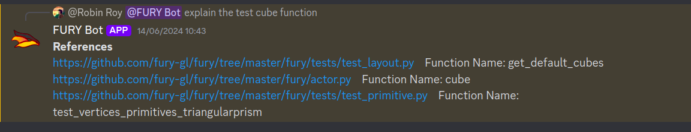

Week 3: Data Data Data!#
Hi, I’m Robin and this is my blog about week 3.
My goal for week 3 was to collect data more efficiently and improve the citations. I also had my mid-terms during this week so I had to get things done fast.
Things I did in week 3#
A better data parsing technique
My initial approach was naive, it was just regex and some common filtrations. Later, my mentors told me to use the inspect module. I studied that module and realized that I needed to parse data using an AST. I didn’t use the inspect module to do the parsing, since I only had to get the function/class signature and docstrings. So instead I used the ast module from python stdlib. My mentors gave me the general direction to go through - which was using ASTs to parse data effectively.
So now we have a script which you run like python extractor.py fury and it’ll generate the appropriate JSON files.
{“path”: “../..”, “function/class name”: “name”, “docstring”: “..”, “class_methods”: [“method1”, “…”]}
I also changed the upserting chunk format. Earlier it was just strings, now it is JSON (same thing above). I do not have a scientific reason for this, but empirically it looks like it helped. Benchmarking is something I’m planning to do next week.
Metadata format:
metadata: {“path”: “../..”, “function/class name”: “name”, “docstring”: “..”, “methods”: [(method1, docstring), (method2, docstring), …]}
Links for citation
Now the bot shows links for citations. Because of the new parsing, I was able to do that pretty efficiently.
Faster Inference
So this is something about the Generative AI field. There are too many things happening you might miss some stuff. Groq is a company providing free APIs for the llama and other opensource models (free for now, at least). Its inference speed is also super high. So I decided to integrate that also into our infrastructure. Since everything is a microservice in our architecture, it is easy to add new things.
- Our architecture:

So now, along with Ollama, we have Groq inference also. I aim to make a router so that we can swap different providers as required. I’m also very interested in integrating Google Gemini 1.5 Flash and other models. Groq does not support fine-tuning, but Flash supports it and is free of cost (for now). Our architecture is platform agnostic, so we can try out different things without being locked into any of them. We will also fine-tune our phi3 model since we have the data with us.
Dockerizing Discord Bot
I earlier used the huggingface implementation (copied their implementation demo). It was bad. My mentors suggested to dockerize the bot so I did that.
What is coming up next week?#
Benchmarking. Now we have the data, but we need to properly benchmark to see whether the modifications I make every day are making the bot dumber or smarter.
Study different techniques to improve model answer accuracy such as HyDE.
Study how to go forward with fine-tuning.
Improved references.
Collect more data.
Did you get stuck anywhere?#
No, everything went well this week. Exam preparation was a pain though😢.
LINKS:
Thank you for reading!